Effects of grid size on (Area Of) Occupancy
Damiano Oldoni
2018-11-09
1 Goal
This document is an ongoing research studying the effects of grid size on Area of Occupancy (AOO) and Occupancy, which is the AOO divided by the total area. Geographic coordinate uncertainty in occurrence data will also be tackled.
1.1 Grid size
We divide Belgium based on UTM grids. We use three grids as provided by European Environment Agency via this link. Cell sizes available: 1x1km, 10x10km and 100x100km. The 1x1km grid size provides a resolution which is much finer than the resolution of (part of) the available occurrence data. On the other side, the 10x10km grid size is not so informative, specially for a small country like Belgium. The 100x100km grid size will be used as a kind of (saturated) reference. In this document we will provide more insights into the effects of grid cell size on the (Area Of) Occupancy.
1.2 Geographic coordinate uncertainty and aggregated data
Using geographic coordinate uncertainty means conceiving occurrence data as circles instead of points. Such circles can intersect several grid cells. The question how to assign the occurrence data to the grid cells arises. We can assign an occurrence point to :
- the centre. This method is equivalent to not taking into account uncertainty: a very simple method but a bias could occurr due to the presence of geographically aggregated data.
- a random point in the circle. It is the best way to handle uncertainty, although computationally demanding for large occurrence datasets.
2 Setup
Load libraries:
# GBIF package
library(rgbif)
# Spatial packages
library(sf)
# visualization package
library(leaflet)
# Downscaling package
library(downscale)
# multiprocessor package
library(multidplyr)
# Tidyverse packages
library(tidyverse)3 Define species under study
We are interested in the following alien species:
| species | kingdom | GBIF backbone key |
|---|---|---|
| Baccharis halimifolia | Plantae | 3129663 |
| Impatiens glandulifera | Plantae | 2891770 |
| Impatiens capensis | Plantae | 2891774 |
| Hydrocotyle ranunculoides | Plantae | 7978544 |
| Branta canadensis | Animalia | 5232437 |
| Harmonia axyridis | Animalia | 4989904 |
limited to Belgium (countryCode = BE).
4 Import data
4.1 Import occurrence data
A GBIF download has been triggered with this download key: "0012078-181003121212138". Import data:
gbif_key <- "0012078-181003121212138"
occ_df_file <- paste0("../data/interim/occ_df_",
gbif_key, ".csv")
# downloaded zip file is in ./data/interim/
file_path <- paste0("../data/interim/")
if (!file.exists(file_path))
dir.create(file_path)
if (!file.exists(occ_df_file)){
occ <- occ_download_get(key = gbif_key, overwrite = TRUE, path = file_path)
fn <- "occurrence.txt"
unzip(zipfile = occ, files = fn,
exdir = "../data/interim/.")
file.rename(from = "../data/interim/occurrence.txt",
to = occ_df_file)
}Import text file in R session:
occ_df <- read_delim(
file = occ_df_file, delim = "\t",
escape_double = FALSE, trim_ws = TRUE)Remove eventually misleading parsing failures:
occ_df <- occ_df %>%
filter(species != "2986")Species:
species_df <- occ_df %>%
distinct(species, speciesKey)
species_dfNumber of occurrences per species:
count_occ_df <- occ_df %>%
group_by(speciesKey, species) %>%
count() %>%
arrange(desc(n))
count_occ_df4.2 Pre-process occurrence data
4.2.1 Remove specimen
Specimen are not occurrence data we are interested to:
occ_df %>%
group_by(basisOfRecord) %>%
count()We use only human observations:
occ_df <- occ_df %>%
filter(basisOfRecord == "HUMAN_OBSERVATION")4.4 Check temporal information
Occurrence data without temporal information cannot be handled. Overview:
occ_df %>%
filter(is.na(year)) %>%
group_by(speciesKey, species, datasetKey, datasetName) %>%
count()We remove them:
occ_df <- occ_df %>%
filter(!is.na(year))4.4.1 Check presence of coordinates
Occurrences without coordinates:
occ_df %>%
filter(is.na(decimalLatitude) | is.na(decimalLongitude)) %>%
group_by(speciesKey, species) %>%
count()We remove them:
occ_df <- occ_df %>%
filter(!is.na(decimalLatitude) & !is.na(decimalLongitude))Note: this filter is equivalent of a GBIF download query containing the additional parameter hasCoordinate = TRUE.
Number of occurrences per species left:
count_occ_df <- occ_df %>%
group_by(speciesKey, species) %>%
count()
count_occ_df4.4.2 Handle data without spatial uncertainty
Uncertainty on position is given in coordinateUncertaintyInMeters while in verbatimCoordinateSystem we can get details about the coordinate system used while collecting data:
occ_df %>%
group_by(coordinateUncertaintyInMeters, verbatimCoordinateSystem) %>%
count() %>%
arrange(desc(n))Overview of occurrence data with missing coordinate uncertainty:
occ_df %>%
filter(is.na(coordinateUncertaintyInMeters)) %>%
group_by(datasetKey, datasetName, speciesKey, species) %>%
count() %>%
arrange(desc(n)) %>%
ungroup() %>%
select(datasetName, species, n, everything())In some cases, based on the dataset and the coordinate system information, we can assign the right uncertainty. However, this approach is not machine-based, very time consuming and not feasable at large scales. A possible solution is the following: if missing, we assign a default uncertainty of 1000 meters.
occ_df <- occ_df %>%
mutate(coordinateUncertaintyInMeters = ifelse(
is.na(coordinateUncertaintyInMeters), 1000.0, coordinateUncertaintyInMeters)
)Overview of the most common coordinate uncertainty for each species and year, the mode:
calc_mode <- function(data) {
data %>%
group_by(coordinateUncertaintyInMeters) %>%
count() %>%
arrange(desc(n)) %>%
ungroup() %>%
slice(1) %>%
pull(coordinateUncertaintyInMeters)
}
mode_unc_df <- occ_df %>%
group_by(species, speciesKey, year) %>%
nest() %>%
mutate(mode_uncertainty = map_dbl(data, calc_mode)) %>%
select(-data) %>%
arrange(species, year)
mode_unc_df4.5 Import grid data
We import UTM grid data at three scales: 1 by 1 km, 5 by 5 km and 10 km by 10 km. As said in introduction, the 5 by 5 km is not a standard resolution: it is used only within INBO Flemish research. All grids have CRS (Coordinate Reference System) equal to Belge Lambert 1972:
grids <- list(grid_1x1km = "utm1_bel",
grid_10x10km = "utm10_bel",
grid_100x100km = "utm100_bel")
belgium_grids <- map(grids, ~ st_read(paste0("../data/external/", .)))## Reading layer `be_1km' from data source `/Users/peter_desmet/Coding/Repositories/trias-project/pipeline/data/external/utm1_bel' using driver `ESRI Shapefile'
## Simple feature collection with 51726 features and 3 fields
## geometry type: POLYGON
## dimension: XY
## bbox: xmin: 3768000 ymin: 2926000 xmax: 4080000 ymax: 3237000
## epsg (SRID): 3035
## proj4string: +proj=laea +lat_0=52 +lon_0=10 +x_0=4321000 +y_0=3210000 +ellps=GRS80 +towgs84=0,0,0,0,0,0,0 +units=m +no_defs
## Reading layer `be_10km' from data source `/Users/peter_desmet/Coding/Repositories/trias-project/pipeline/data/external/utm10_bel' using driver `ESRI Shapefile'
## Simple feature collection with 580 features and 3 fields
## geometry type: POLYGON
## dimension: XY
## bbox: xmin: 3760000 ymin: 2920000 xmax: 4080000 ymax: 3240000
## epsg (SRID): 3035
## proj4string: +proj=laea +lat_0=52 +lon_0=10 +x_0=4321000 +y_0=3210000 +ellps=GRS80 +towgs84=0,0,0,0,0,0,0 +units=m +no_defs
## Reading layer `be_100km' from data source `/Users/peter_desmet/Coding/Repositories/trias-project/pipeline/data/external/utm100_bel' using driver `ESRI Shapefile'
## Simple feature collection with 13 features and 3 fields
## geometry type: POLYGON
## dimension: XY
## bbox: xmin: 3700000 ymin: 2900000 xmax: 4100000 ymax: 3300000
## epsg (SRID): 3035
## proj4string: +proj=laea +lat_0=52 +lon_0=10 +x_0=4321000 +y_0=3210000 +ellps=GRS80 +towgs84=0,0,0,0,0,0,0 +units=m +no_defscrs_grid <- st_crs(belgium_grids[["grid_1x1km"]])
crs_grid## Coordinate Reference System:
## EPSG: 3035
## proj4string: "+proj=laea +lat_0=52 +lon_0=10 +x_0=4321000 +y_0=3210000 +ellps=GRS80 +towgs84=0,0,0,0,0,0,0 +units=m +no_defs"Total area of the grids in square meters:
total_areas <- map(belgium_grids, function(x) as.numeric(sum(st_area(x))))
total_areas## $grid_1x1km
## [1] 5.1726e+10
##
## $grid_10x10km
## [1] 5.8e+10
##
## $grid_100x100km
## [1] 1.3e+11and mean cell size in meters:
cell_sizes <- map(belgium_grids, function(x) as.numeric(mean(st_area(x))))
cell_sizes## $grid_1x1km
## [1] 1e+06
##
## $grid_10x10km
## [1] 1e+08
##
## $grid_100x100km
## [1] 1e+105 Calculate (Area of) Occupancy
5.1 Assign occurrence to centre (no use of uncertainty values)
We assign the occurrence data to the centre of the circle formed by taking the coordinateUncertaintyInMeters as radius and the columns decimalLongitude - decimalLatitude as centre. We use the latter ones to create such points, thus discarding information about geographic coordinate uncertainty. Notice that GBIF occurrence data use WGS84 projection:
# CRS used by GBIF
wgs_84 <- st_crs("+init=epsg:4326") Create points and convert them to grid projection:
occ_pts <- st_as_sf(occ_df, coords = c('decimalLongitude', 'decimalLatitude'),
crs = wgs_84)
occ_pts <- st_transform(occ_pts, crs_grid)Intersect points and grids:
points_on_grids <- map(belgium_grids, st_intersection, occ_pts)Only grid cells containing at least one point are present.
We calculate the number of occurrences per cell and assign 1 (presence) to them. This step can take long due to the high number of cells of the grid with 1x1km resolution:
pres_table <- map(points_on_grids, function(x) {
part_year <- partition (x, CELLCODE)
pres_year <- part_year %>%
group_by(speciesKey, year) %>%
summarise(dplyr::n()) %>%
as.tibble(pres_year) %>%
ungroup() %>%
rename("n_occs" = "dplyr::n()") %>%
filter(n_occs > 0) %>%
mutate(presence = 1) %>%
left_join(species_df, by = "speciesKey") %>%
select(speciesKey, species, everything())
return(pres_year)
})For each grid resolution species and year, we calculate the Area Of Occupancy (AOO) and the Occupancy (AOO divided by total grid area):
aoo <- pmap(list(pres_table, belgium_grids, total_areas, cell_sizes),
function(presence_df, grid, total_area, cell_size) {
presence_df %>%
group_by(species, speciesKey, year) %>%
summarize(aoo = n() *cell_size,
n_occs = sum(n_occs)) %>%
ungroup() %>%
mutate(occupancy = aoo / total_area,
cell_area = cell_size)
})AOO plot:
map2(aoo, names(aoo), function(grid, name_grid) {
ggplot(grid) +
aes(x = year, y = aoo/10^6) +
facet_wrap(~ species) +
geom_col() +
labs(x = "year", y = "AOO (km2)") +
ggtitle(name_grid)
})## $grid_1x1km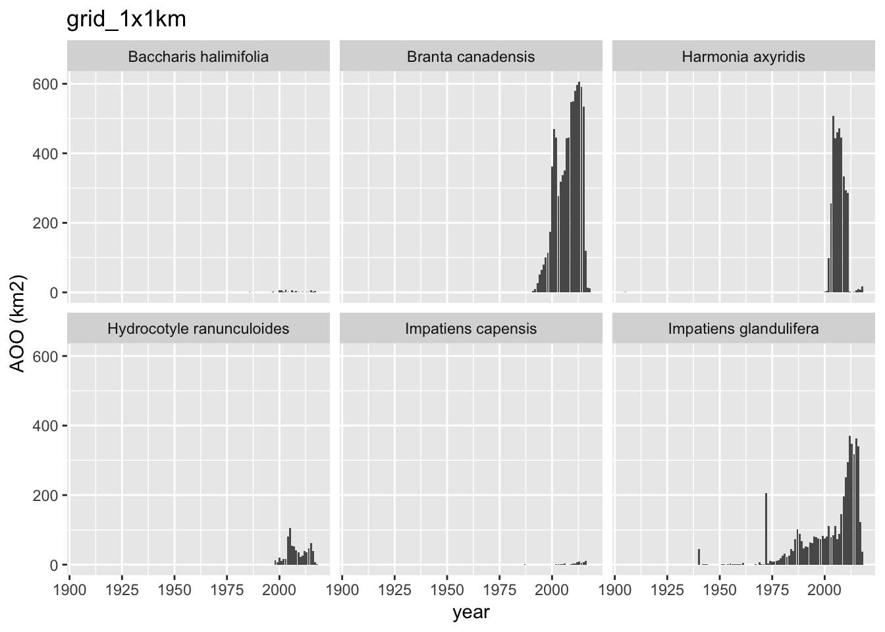
##
## $grid_10x10km##
## $grid_100x100kmOccupancy plot:
map2(aoo, names(aoo), function(grid, name_grid) {
ggplot(grid) +
aes(x = year, y = occupancy) +
facet_wrap(~ species) +
geom_col() +
labs(x = "year", y = "occupancy") +
ggtitle(name_grid)
})## $grid_1x1km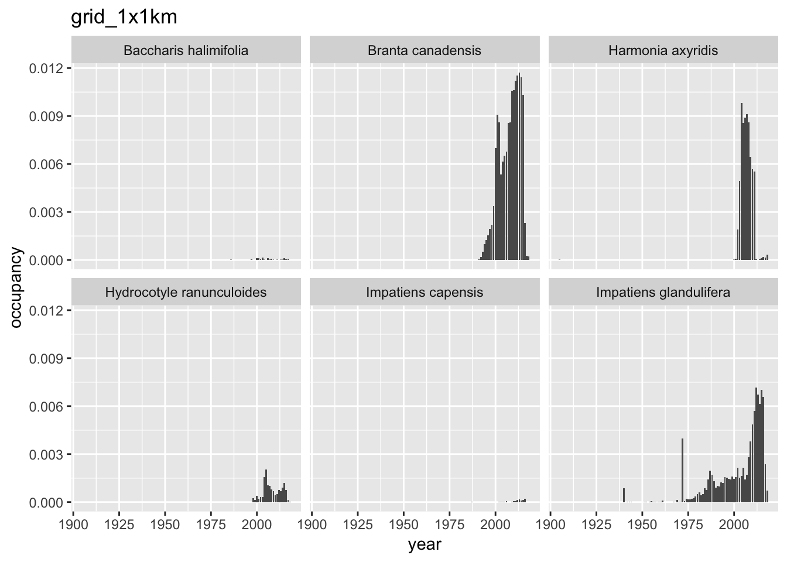
##
## $grid_10x10km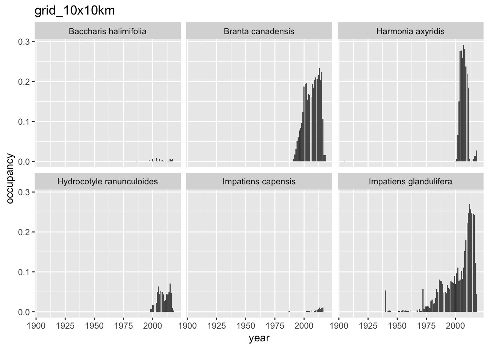
##
## $grid_100x100kmWe compare the AOO calculated using different grid cell size:
aoo_compare_tidy <- map2_dfr(aoo, names(aoo),
function(df, grid_name) {
df %>% mutate(grid_size = grid_name)
})Plot for each species:
map(species_df$species,
function(x){
ggplot(aoo_compare_tidy %>%
filter(species == x),
aes(x = year, y = aoo/(10^6), fill = grid_size)) +
geom_col(position = "dodge") +
labs(x= "year", y = "AOO") +
ggtitle(paste0(x,". Area Of Occupancy (AOO) km2"))
})## [[1]]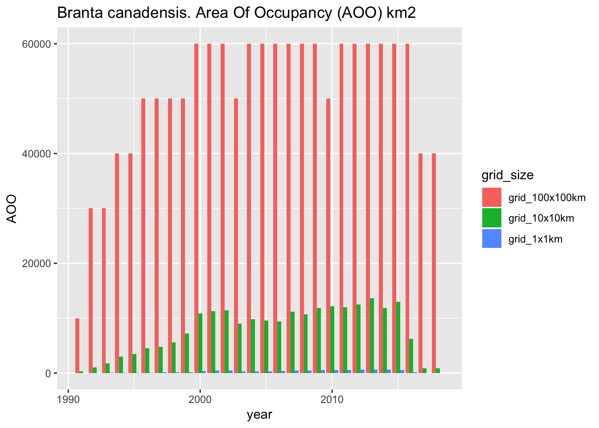
##
## [[2]]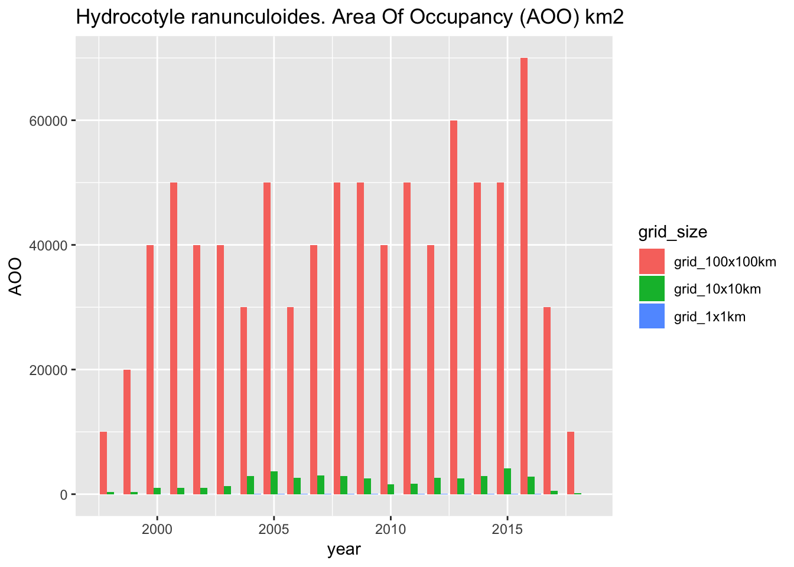
##
## [[3]]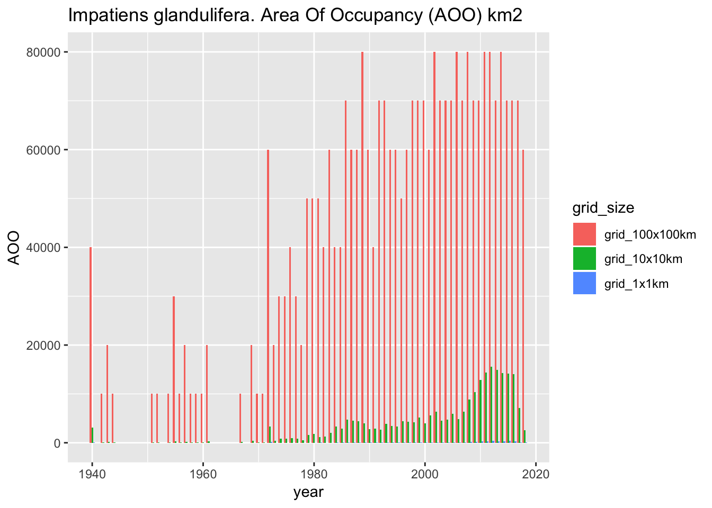
##
## [[4]]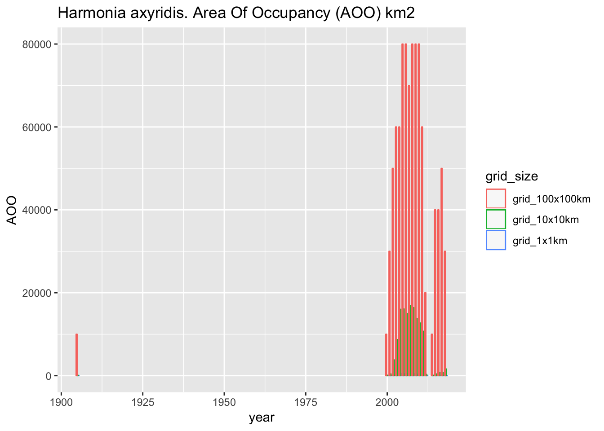
##
## [[5]]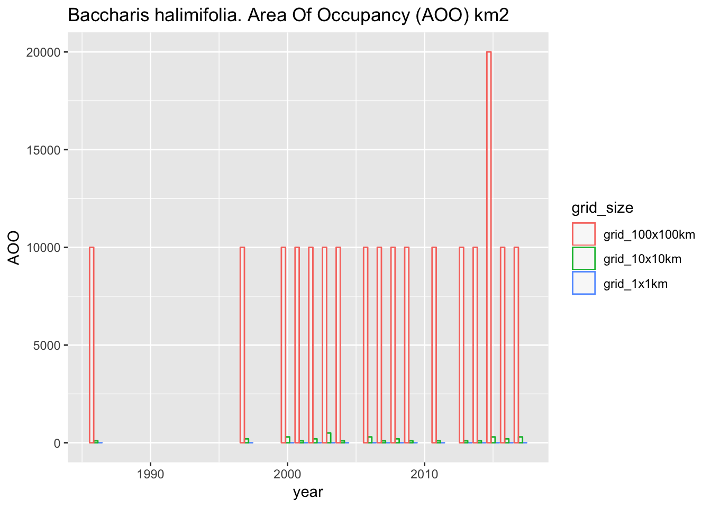
##
## [[6]]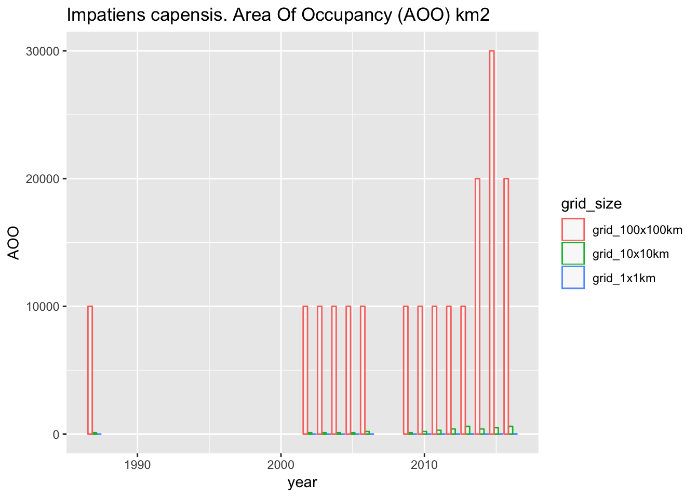
As expected the AOO increases by increasing the grid cell size. We plot the logarithm of occupancy and the logarithm of cell area for period 2005 - 2010:
years <- aoo_compare_tidy %>%
filter(year >= 2005 & year <= 2010) %>%
distinct(year) %>%
pull()
map(years, function(y) {
ggplot(aoo_compare_tidy %>%
filter(year == y),
aes(x = log(cell_area), y = log(occupancy), color = species)) +
geom_point() +
geom_line() +
labs(x = "log(area)", y = "log(occupancy)") +
ggtitle(y)
})## [[1]]
##
## [[2]]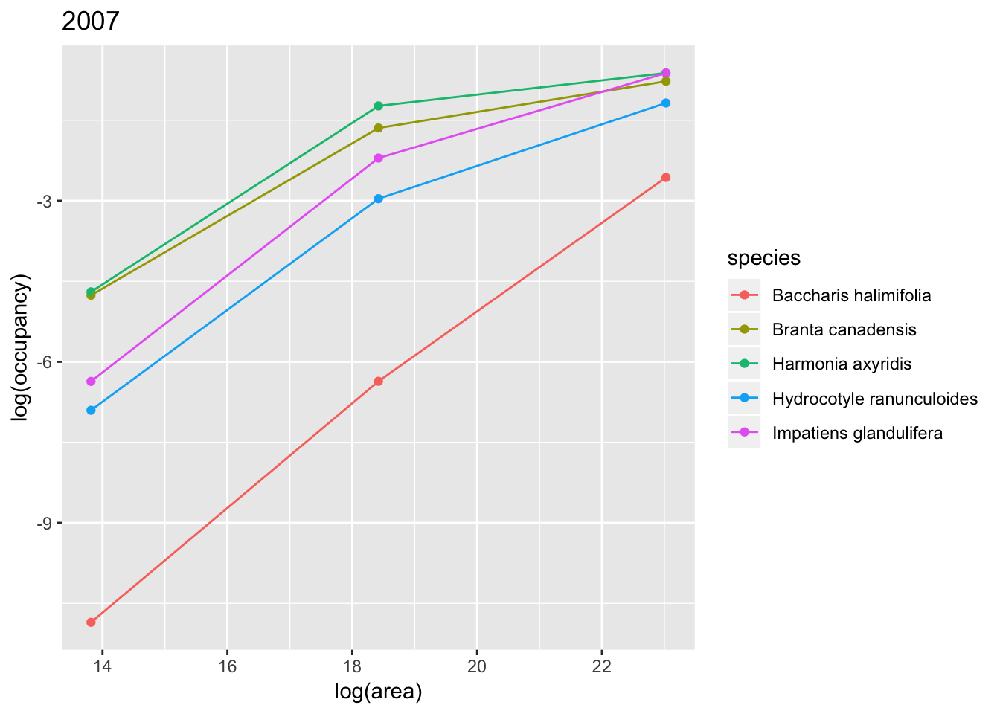
##
## [[3]]
##
## [[4]]
##
## [[5]]
##
## [[6]]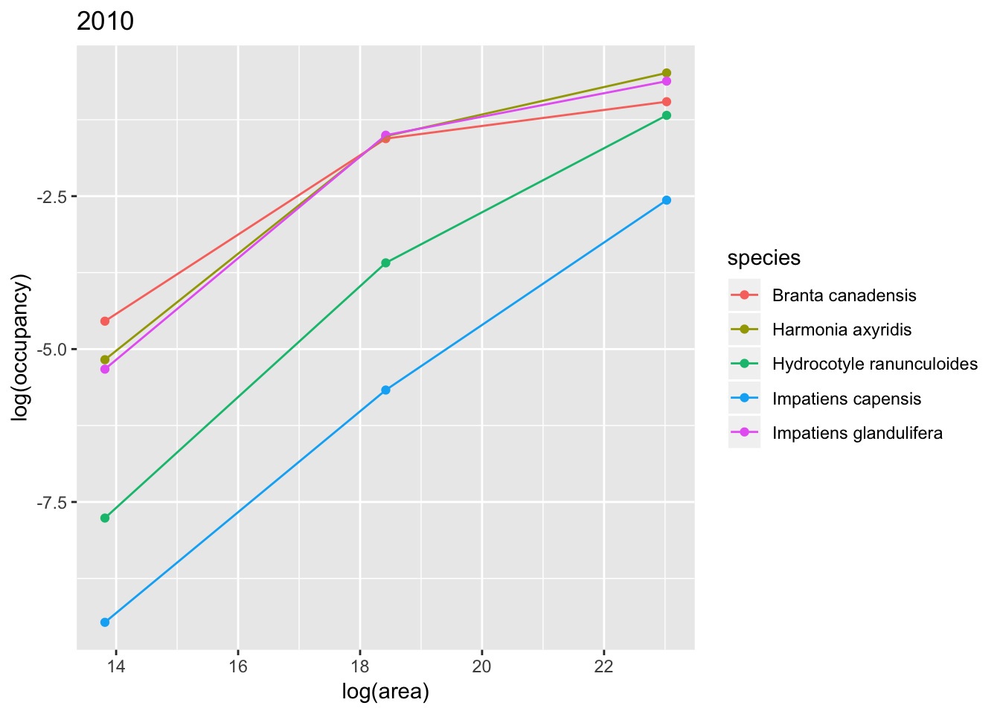
We can see that no signs of saturation (horizonta line) occur although endemism surely occurs for species-year combination with very few occurrences (see Azaele et al., 2012 and vignette("Upgraining", package = "downscale")). On the other hand, mapping coarse occurrence data with a finer grid tends theoretically to uncorrect occupancy at such resolution: underestimation will occurr especially if data are aggregated.
6 Solution 1: downscaling
Given a coordinate uncertainty \(\Delta r\), any grid with cell with side \(l < 2 \Delta r\) would be too fine. If we aim to calculate AOO at a resolution of 1km we should apply downscaling techniques.
For downscaling we need a presence-absence table for each grid, so we need to add zeros to number of occurrences (column n_occs) and presence (column presence) where needed:
pres_df <- pres_table$grid_10x10km
grid <- belgium_grids$grid_10x10km
species_years <- pres_df %>%
distinct(species, speciesKey, year)
pres_abs_df <- crossing(grid, species_years) %>%
left_join(pres_df) %>%
mutate(n_occs = replace_na(n_occs, 0),
presence = replace_na(presence, 0)) Assign presence-absence table to centroids:
pres_abs_ctds <- st_centroid(pres_abs_df)6.0.1 Upgraining
Apply upgrain.threshold() to estimate the best threshold method. We use two scaling levels (we upgrain from 10 by 10 to 20 by 20 and 40 by 40). As explained in vignette("Upgraining", package = "downscale"):
a larger number of scales means there is more data to fit the downscaling models, however the larger discrepancy there will be between the original extent of the atlas data and the new standardised extent.
In case of small extent (Belgium is relatively small) this discrepancy can easily become very large. So, we don’t recommend any further upgraining. Here below we show the effects of choosing different thresholds for Hydrocotyle ranunculoides and year 2011:
example <- pres_abs_ctds %>%
filter(species ==
"Hydrocotyle ranunculoides") %>%
filter(year == 2011)
example <- as(example, "Spatial")
example@data <- data.frame(example@data$presence)
get_upgrain_values <- upgrain.threshold(
example,
cell.width = 10000,
scales = 2,
thresholds = seq(0, 1, 0.01))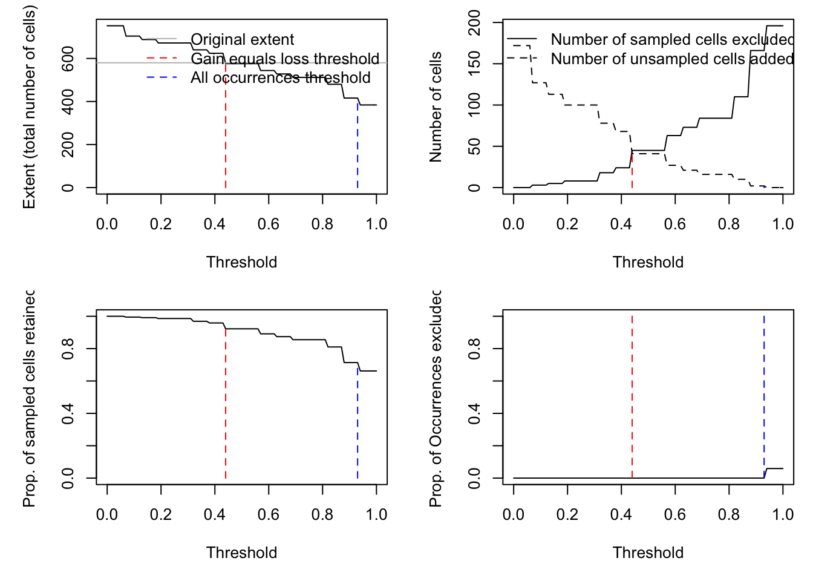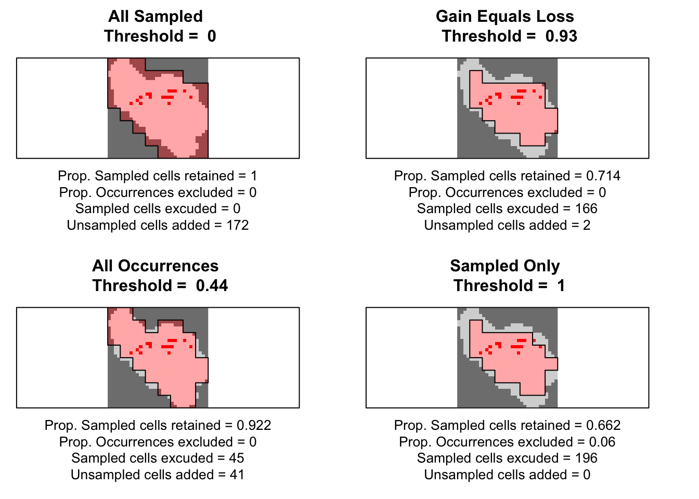
Apply upgraining using thresholdbased on method All_Occurrences with scales equal to 2 for all species and years:
progress_bar <- progress_estimated(nrow(species_years))
upgrain_species_year <- map2(species_years$species,
species_years$year,
function(s,y) {
progress_bar$tick()$print()
points <- pres_abs_ctds %>%
filter(species == s) %>%
filter(year == y)
points <- as(points, "Spatial")
points@data <- data.frame(points@data$presence)
upgrain(points, scales = 2,
cell.width = 10000,
method = "All_Occurrences",
plot = FALSE)
}
)
names(upgrain_species_year) <- str_c(species_years$species,
species_years$year, sep = "_")We select the five simplest downscale models, which have been used in Groom at al. 2018 in order to form the so called simple ensemble: power law, Nachman, Poisson, logistic and negative binomial.
models_simple_ensemble = c("Nachman", "PL", "Poisson", "Logis", "NB")and cell resolution 1x1km, 2x2km and:
# 1x1km, 2x2, 5x5
areas <- c(10^6, 4*10^6, 25*10^6)Run downscaling:
# library(stringr)
# select_species <- upgrain_species_year[which(map_lgl(names(upgrain_species_year), str_detect, "Impatiens glandulifera"))]
progress_bar <- progress_estimated(length(upgrain_species_year))
downscaling <- map(upgrain_species_year, ~ {
progress_bar$tick()$print()
try(ensemble.downscale(.,
new.areas = areas,
models = models_simple_ensemble,
verbose = FALSE,
plot = FALSE),
silent = FALSE)
})If Error : Not enough scales before scale of endemism for modelling appears it means that the scale of endemism has been reached among 10x10km and 40x40km. As explained in Azaele et al., 2012 and vignette("Upgraining", package = "downscale"), the scale of endemism is the grain size where all presences occur in a single cell. This happens for species-years with very few and very localized occurrences, i.e. very low occupancy. In general, downscaling methods are deprecated at low occupancy levels. Here below we show number of occurrences and uncertainty (mode) of all cases of endemism:
endemism_df <- map2_dfr(names(downscaling), downscaling,
function(s_y, results) {
if (class(results) == "try-error") {
endemic_df <- data.frame(species_year = s_y)
endemic_df <- separate(endemic_df,
col = species_year,
into = c("species", "year"),
sep = "_",
convert = TRUE)
return(endemic_df)
}
})
endemism_df <- endemism_df %>%
left_join(mode_unc_df) %>%
left_join(aoo_compare_tidy %>%
distinct(speciesKey, species, year, n_occs)) %>%
arrange(desc(n_occs))
endemism_dfWe remove these species-year combinations and transform the list to data.frame containing occupancy and AOO:
downscaling_tidy <- map_dfr(
names(downscaling), function(x) {
if (class(downscaling[[x]]) != "try-error") {
downscale_occ <- downscaling[[x]]$Occupancy
downscale_aoo <- downscaling[[x]]$AOO
colnames(downscale_aoo) <- paste0("aoo_", colnames(downscale_aoo))
downscale_occ <- downscale_occ %>%
mutate(species = str_split(x, pattern = "_")[[1]][1],
year = as.integer(str_split(x, pattern = "_")[[1]][2])) %>%
bind_cols(downscale_aoo %>% select(-aoo_Cell.area))
return(downscale_occ)
}
}
)
downscaling_tidy <- downscaling_tidy %>% select(-starts_with("aoo_")) %>%
gather_(key = "method",
value = "occupancy",
c(models_simple_ensemble,"Means")) %>%
left_join(downscaling_tidy %>%
select(starts_with("aoo_"), species, year) %>%
gather_(key = "method",
value = "aoo",
paste0("aoo_",c(models_simple_ensemble, "Means"))) %>%
mutate(method = str_remove(method, "aoo_")),
by = c("species", "year", "method"))Plot occupancy for each species and downscaling method at 1 square kilometer (Cell.area equal to 1.0e+06):
cell_area <- 1.0e+06
occupancy_plots <- map(
species_df$species, function(species_name)
ggplot(downscaling_tidy %>%
filter(species == species_name &
Cell.area == cell_area),
aes(x = year, y = occupancy, colour = method)) +
geom_line() +
geom_point() +
ggtitle(species_name))
occupancy_plots## [[1]]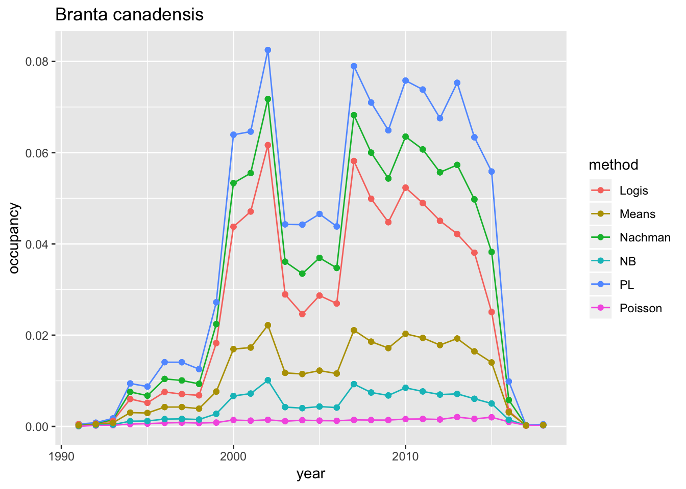
##
## [[2]]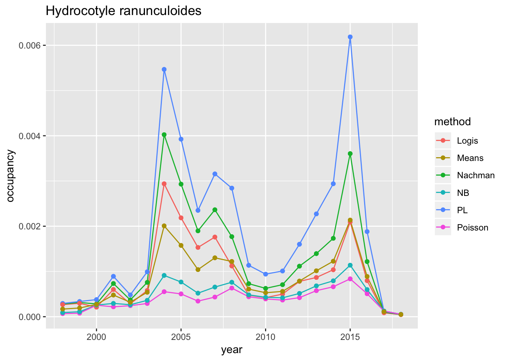
##
## [[3]]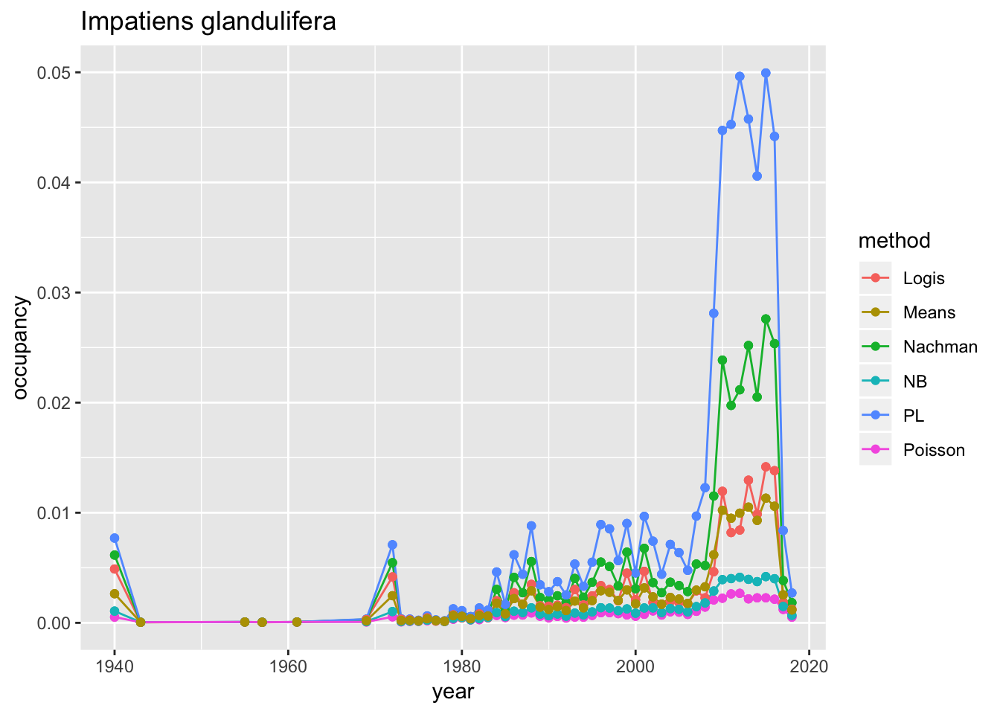
##
## [[4]]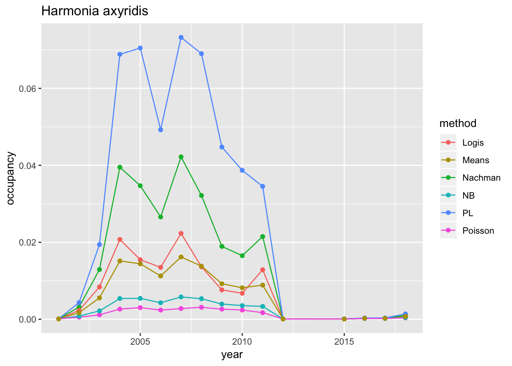
##
## [[5]]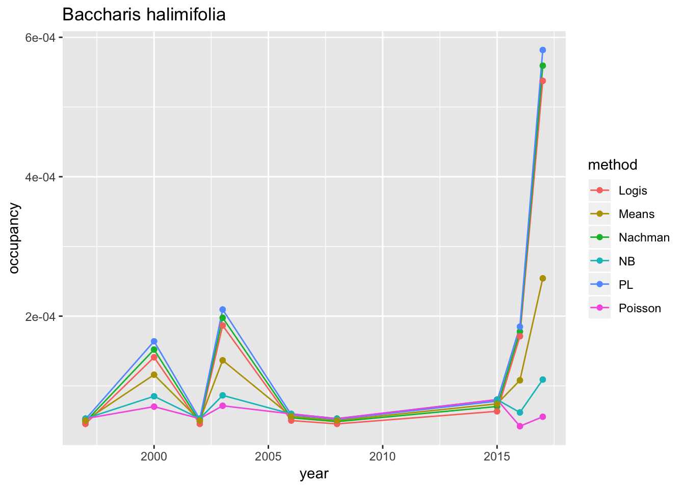
##
## [[6]]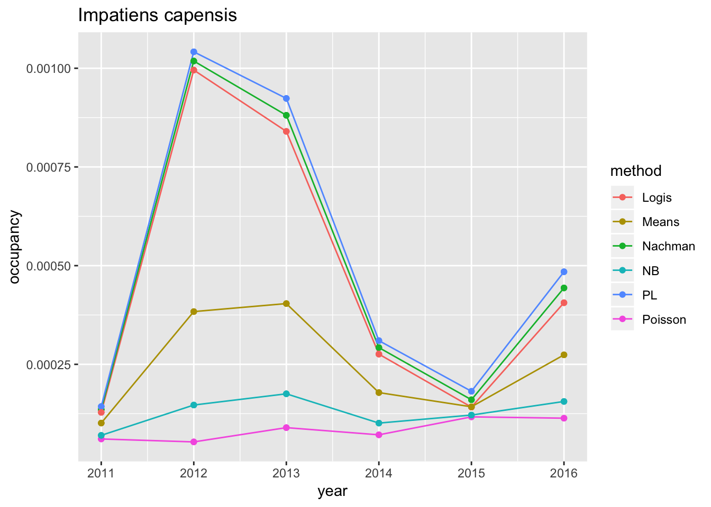
We select the mean of the simple ensemble at 1x1km resolution as summary for final comparison:
aoo_compare_downscaling_sum <- downscaling_tidy %>%
filter(Cell.area == 10^6 &
method == "Means") %>%
right_join(species_df) %>%
select(species, speciesKey, year, occupancy, aoo)7 Solution 2: use uncertainty on occurrence data
In this chapter we use information about coordinate uncertainty and conceive occurrence data as circles, with decimalLongitude and decimalLatitude as centre and radius equal to coordinateUncertaintyInMeters.
occ_circles <- st_buffer(occ_pts,
dist = occ_pts$coordinateUncertaintyInMeters,
nQuadSegs = 6)A preview leaflet map by using the grid with cell size 10x10km and occurrence data of species Hydrocotyle ranunculoides from 2000:
data_on_leaflet <- occ_circles %>%
filter(species == "Hydrocotyle ranunculoides") %>%
filter(year >= 2015) %>%
st_transform(wgs_84)
mapt <- leaflet() %>%
addTiles() %>%
addPolygons(data = belgium_grids$grid_10x10km %>%
st_transform(wgs_84),
weight = 1, opacity = 0.5, fillOpacity = 0.1) %>%
addPolygons(data = data_on_leaflet,
weight = 1, opacity = 0.4, fillOpacity = 0.5)
maptSome occurrence data are quite coarse and geographically aggregated: they are assigned to same coordinates, thus resulting in darker points on map. A way to solve such issue and at the same time to take into account the coordinate uncertainty, we assign the occurrence data to a point randomly chosen within the circle. Note: this step can take long:
get_random_pt <- function(x) {
random_pt <- st_sample(x , size = 1, type = "random")
while (length(random_pt) == 0) {
random_pt <- st_sample(x , size = 1, type = "random")
}
return(random_pt)
}
random_pts <- map(st_geometry(occ_circles), get_random_pt)
random_pts <- st_sfc(unlist(random_pts, recursive = FALSE), crs = crs_grid)Assign these new points to the occurrence data:
occ_pts_randomize <- st_sf(data.frame(occ_df, geom = random_pts))Preview:
n_pts <- 50
preview_pts_circles <- occ_pts_randomize[1:n_pts,]
mapt <- leaflet() %>%
addTiles() %>%
addPolygons(data = belgium_grids$grid_10x10km %>%
st_transform(wgs_84),
weight = 1, opacity = 0.5, fillOpacity = 0.1) %>%
addCircleMarkers(data = preview_pts_circles %>%
st_transform(wgs_84),
radius = 2, color = "red") %>%
addPolygons(data = occ_circles[1:n_pts,] %>%
st_transform(wgs_84),
weight = 1, opacity = 0.3, fillOpacity = 0.3)
maptWe can now repeat the same procedure followed at the beginning. First, intersect the new points with grids:
points_on_grids_randomize <- map(belgium_grids,
st_intersection,
occ_pts_randomize)Only grid cells containing at least one point are present.
We calculate the number of occurrences per cell and assign 1 (presence) to them. This step can take long due to the high number of cells at 1x1km resolution:
pres_table_randomize <- map(points_on_grids_randomize, function(x) {
part_year <- partition (x, CELLCODE)
pres_year <- part_year %>%
group_by(speciesKey, year) %>%
summarise(dplyr::n()) %>%
as.tibble(pres_year) %>%
ungroup() %>%
rename("n_occs" = "dplyr::n()") %>%
filter(n_occs > 0) %>%
mutate(presence = 1) %>%
left_join(species_df, by = "speciesKey") %>%
select(speciesKey, species, everything())
return(pres_year)
})For each grid resolution, species and year, we calculate the Area Of Occupancy and the Occupancy (AOO divided by total grid area):
aoo_randomize <- pmap(list(pres_table_randomize, belgium_grids, total_areas, cell_sizes),
function(presence_df, grid, total_area, cell_size) {
presence_df %>%
group_by(species, speciesKey, year) %>%
summarize(aoo = n() * cell_size,
n_occs = sum(n_occs)) %>%
ungroup() %>%
mutate(occupancy = aoo / total_area,
cell_area = cell_size)
})The new AOO plot:
map2(aoo_randomize, names(aoo_randomize), function(grid, name_grid) {
ggplot(grid) +
aes(x = year, y = aoo/10^6) +
facet_wrap(~ species) +
geom_col() +
labs(x = "year", y = "AOO (km2)") +
ggtitle(name_grid)
})## $grid_1x1km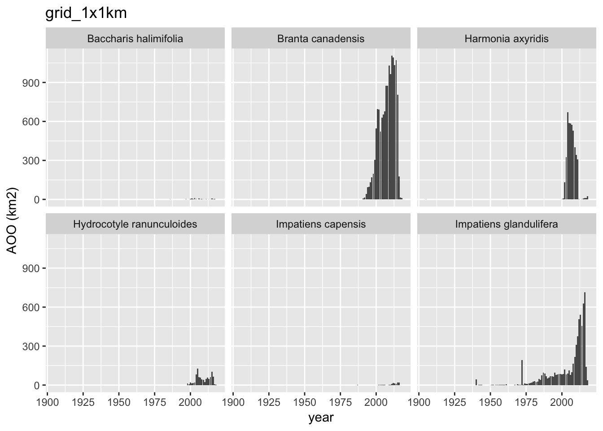
##
## $grid_10x10km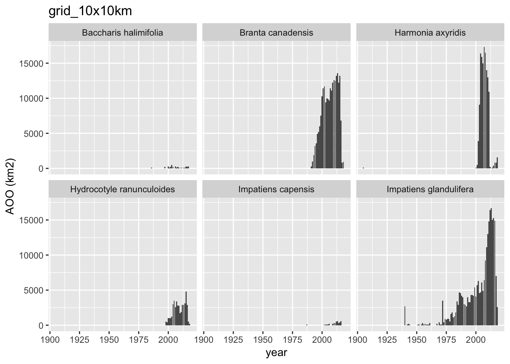
##
## $grid_100x100km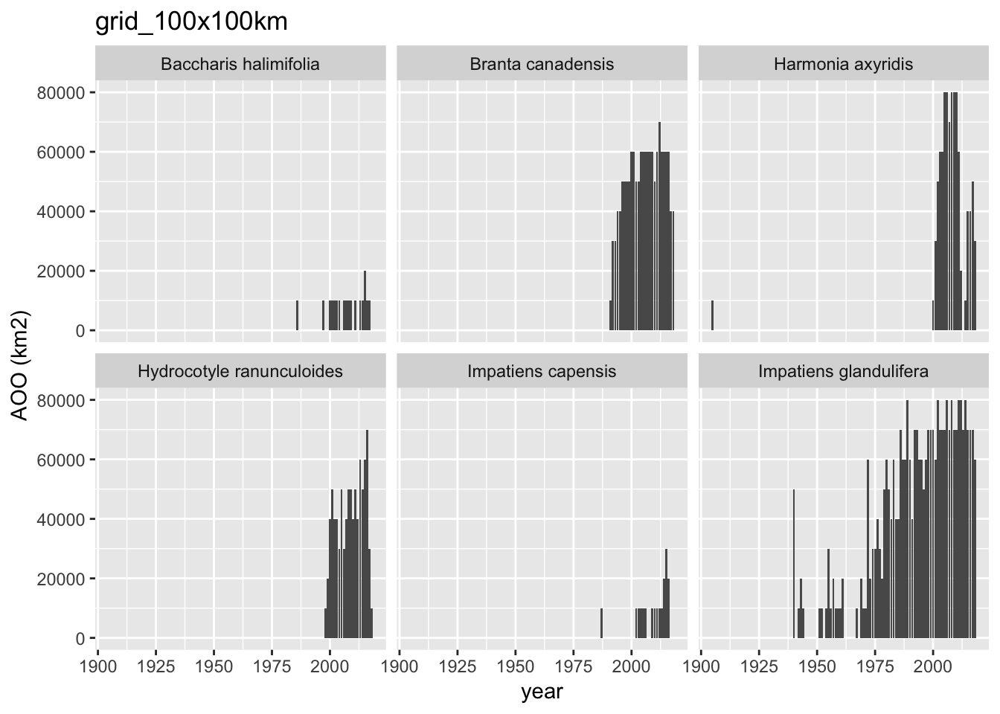
Occupancy plot:
map2(aoo_randomize, names(aoo_randomize), function(grid, name_grid) {
ggplot(grid) +
aes(x = year, y = occupancy) +
facet_wrap(~ species) +
geom_col() +
labs(x = "year", y = "occupancy") +
ggtitle(name_grid)
})## $grid_1x1km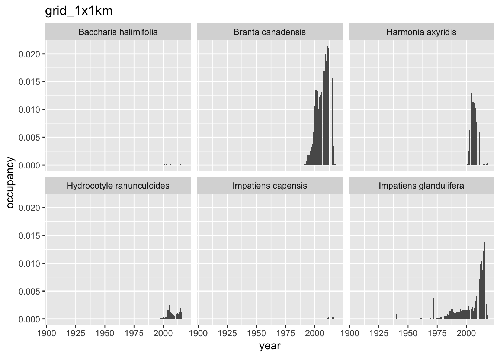
##
## $grid_10x10km##
## $grid_100x100km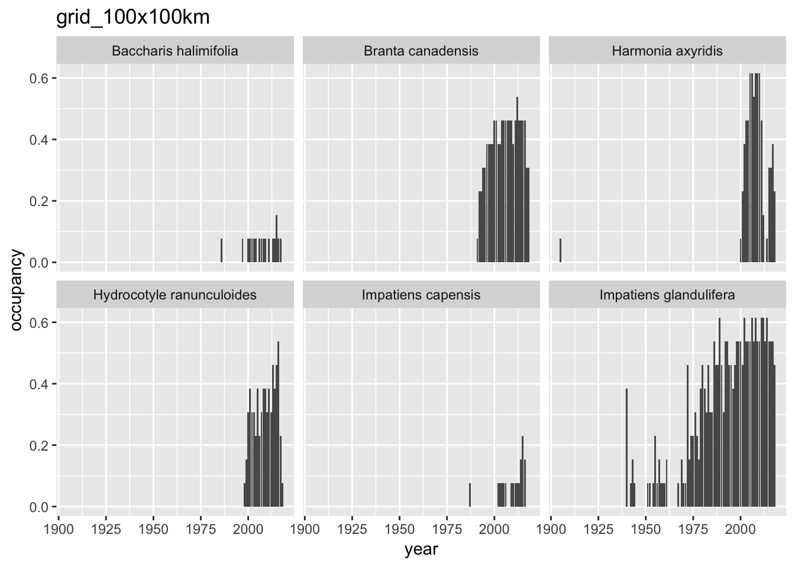
We compare the AOO calculated using different grid cell size:
aoo_compare_tidy_randomize <- map2_dfr(aoo_randomize, names(aoo_randomize),
function(df, grid_name) {
df %>% mutate(grid_size = grid_name)
})Again, AOO increases by increasing the grid cell size. We plot the logarithm of occupancy and the logarithm of cell area for period 2005 - 2010:
years <- aoo_compare_tidy_randomize %>%
filter(year >= 2005 & year <= 2010) %>%
distinct(year) %>%
pull()
map(years, function(y) {
ggplot(aoo_compare_tidy %>%
filter(year == y),
aes(x = log(cell_area), y = log(occupancy), color = species)) +
geom_point() +
geom_line() +
labs(x = "log(area)", y = "log(occupancy)") +
ggtitle(y)
})## [[1]]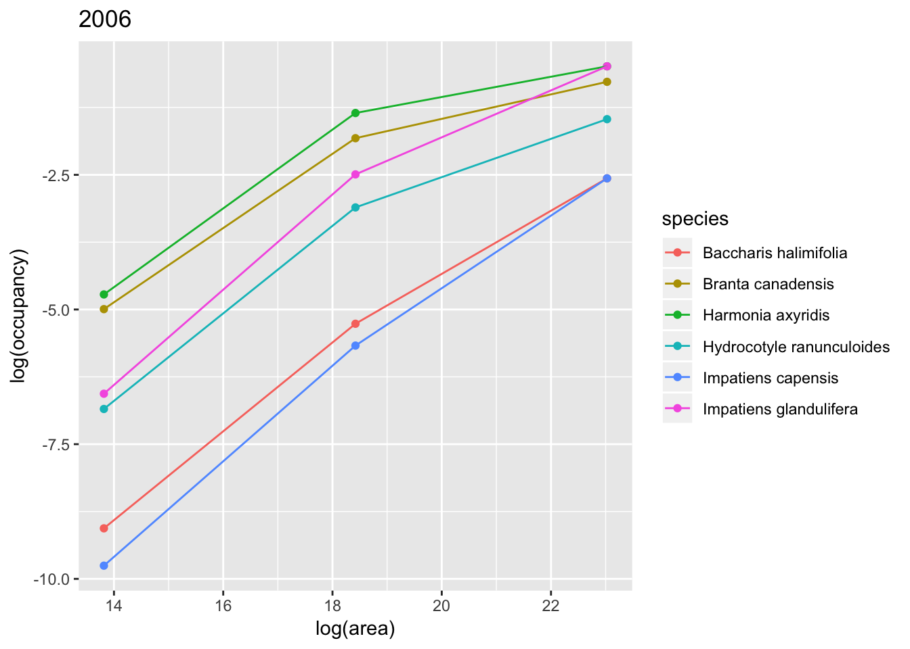
##
## [[2]]
##
## [[3]]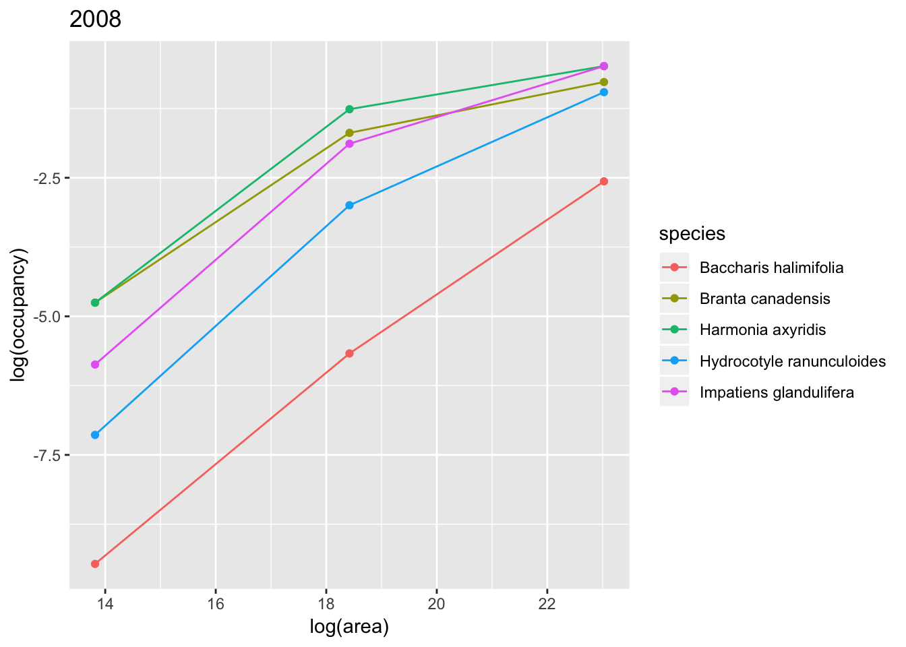
##
## [[4]]
##
## [[5]]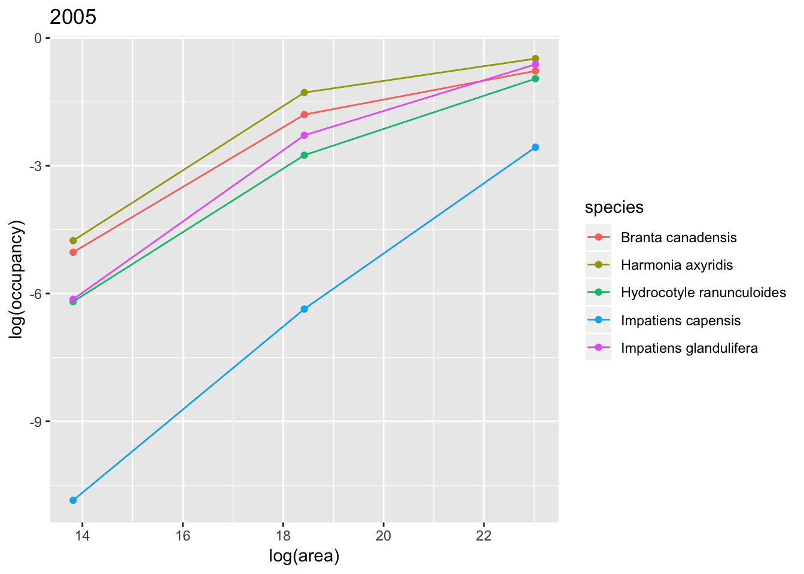
##
## [[6]]
8 Final summary
We can now summarize the results for comparison.
aoo_compare_tidy_sum <- aoo_compare_tidy %>%
rename("aoo_unc" = "aoo",
"occupancy_unc" = "occupancy") %>%
select(species, speciesKey, year, n_occs, occupancy_unc, grid_size) %>%
spread(key = grid_size,
value = occupancy_unc)
aoo_compare_downscaling_sum <- aoo_compare_downscaling_sum %>%
rename("aoo_downscale" = "aoo",
"occupancy_downscale" = "occupancy")
aoo_compare_tidy_randomize_sum <- aoo_compare_tidy_randomize %>%
rename("aoo_unc" = "aoo",
"occupancy_unc" = "occupancy") %>%
filter(grid_size == "grid_1x1km") %>%
select(species, speciesKey, year, n_occs, occupancy_unc, grid_size) %>%
spread(key = grid_size,
value = occupancy_unc) %>%
rename("grid_1x1km_uncertainty" = "grid_1x1km")
aoo_summary <- aoo_compare_tidy_sum %>%
inner_join(mode_unc_df) %>%
inner_join(aoo_compare_downscaling_sum %>%
select(-aoo_downscale)) %>%
inner_join(aoo_compare_tidy_randomize_sum) %>%
select(speciesKey, species, year, n_occs, mode_uncertainty, everything())
aoo_summaryPlot occupancy at 1x1km for the three different methods:
occ_plot_summary <- map(species_df$species, function(x) {
ggplot(aoo_summary %>%
gather(key = "method",
value = "occupancy_1x1km",
grid_1x1km,
occupancy_downscale,
grid_1x1km_uncertainty) %>%
filter(species == x),
aes(x = year,
y = occupancy_1x1km,
fill = method)) +
geom_col(position = "dodge") +
ylab("1x1km_occupancy") +
xlab("year") +
ggtitle(paste("Occupancy at 1x1km resolution:", x))
})
occ_plot_summary ## [[1]]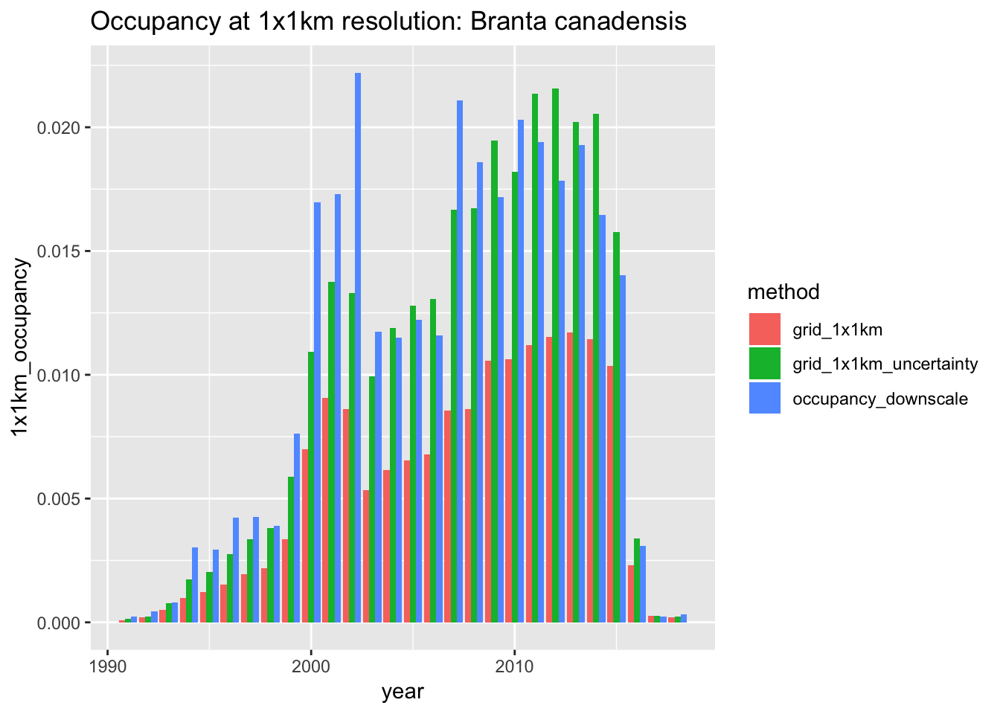
##
## [[2]]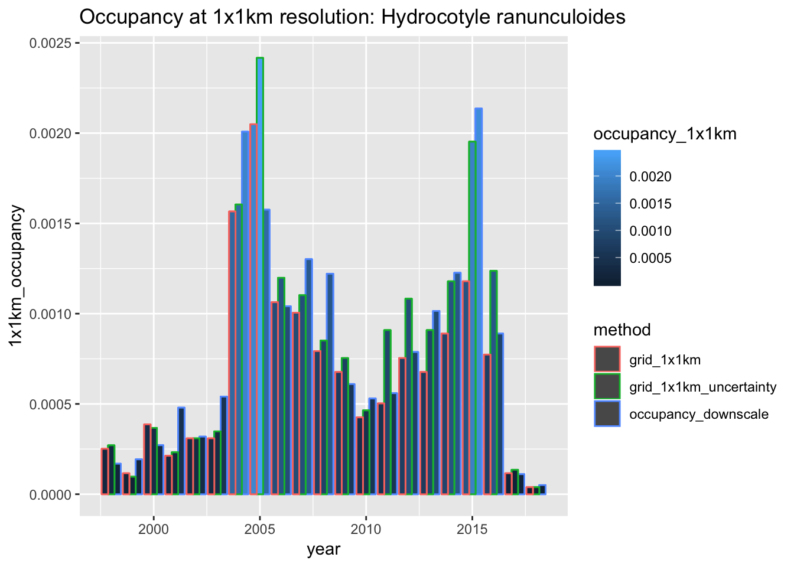
##
## [[3]]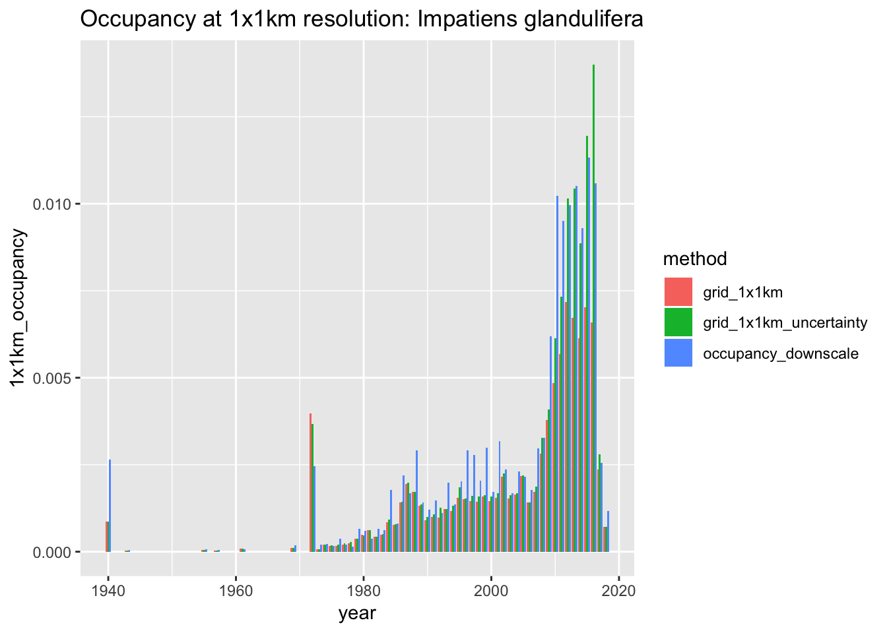
##
## [[4]]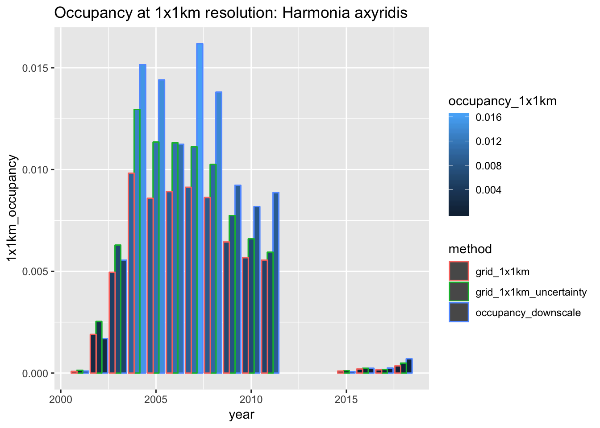
##
## [[5]]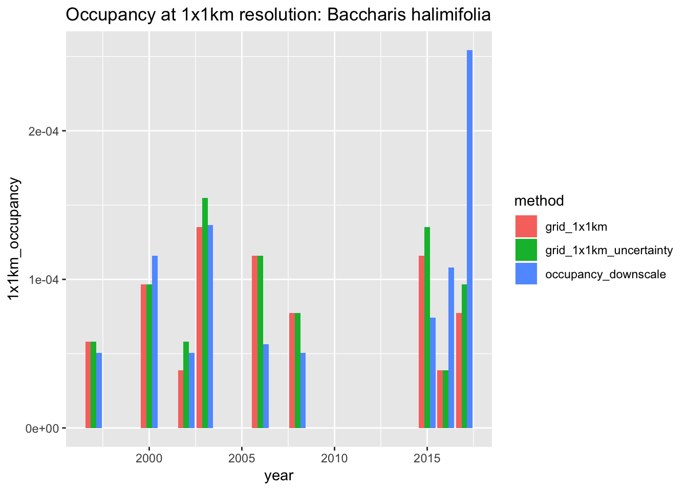
##
## [[6]]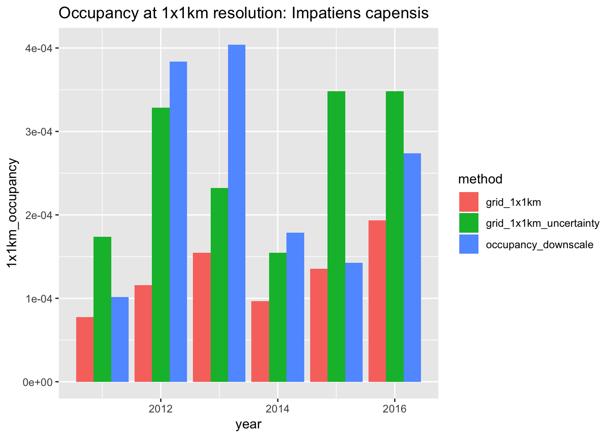
As expected, we can see how occupancy calculated applying downscaling or using uncertainty to assign occurrence coordinates is almost always higher than just using the coordinates.
Differences between occupancy calculated by downscaling and by using uncertainty are less prononunced. We plot the relative difference in occupancy calculatd by the two methods ( occupancy by downscaling - occupancy by uncertainty ) vs the occupancy calculated by downscaling:
aoo_summary_rel_diff <- aoo_summary %>%
mutate(diff_downscale_unc =
(occupancy_downscale - grid_1x1km_uncertainty)/occupancy_downscale)
ggplot(aoo_summary_rel_diff, aes(occupancy_downscale, diff_downscale_unc)) +
geom_point() +
geom_smooth(data = aoo_summary_rel_diff, method = "lm") +
ylab("(occ(dws) - occ(unc))/occ(dws)") +
xlab("occ(dws)") +
ggtitle("Relative difference in occupancy vs occupancy")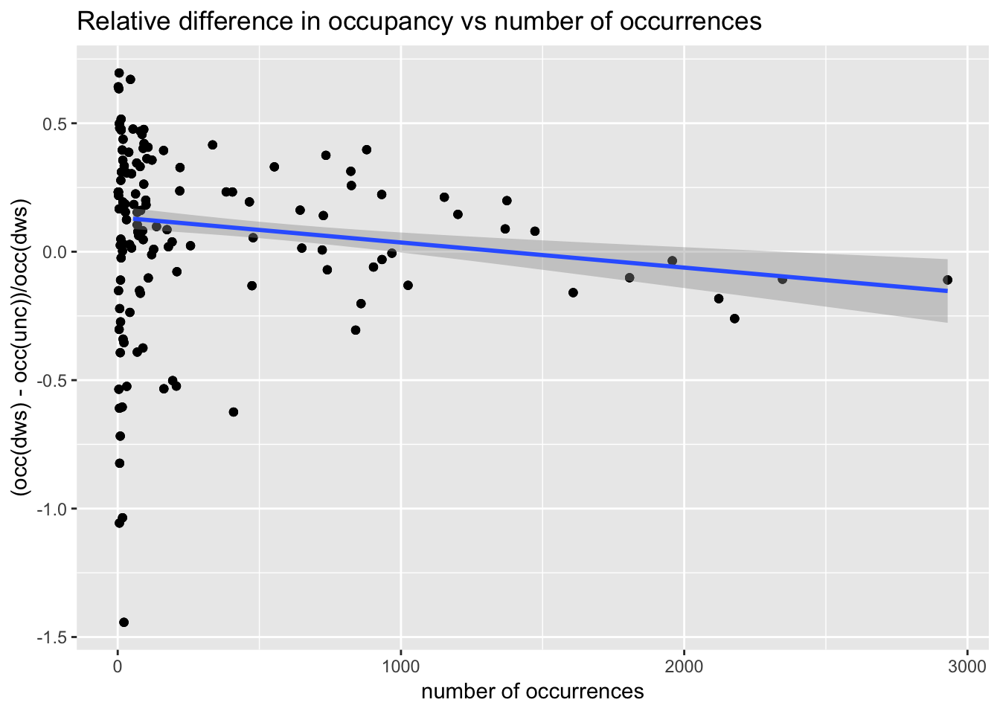
We can see how the relative differences don’t show a prononuced trend. We cannot see any trend at all actually. For occupancy not near to zero the two methods provide We notice how the relative difference very high for vey low occupancy, which is quite reasonable if we take into account that:
- Relative differences tend to be high if number of occupied grid cells (denominator) is very low.
- Downscaling is deprecated if occupancy is very low (FIND CITATION about).
We have also to not forget that downscaling couldn’t be applied for 31 species/year combinations due to endemism effects.
We conclude this analysis showing that no relation between coordinate uncertainty (mode) and relative difference in occupancy seems to exist:
ggplot(aoo_summary %>%
mutate(diff_downscale_unc =
(occupancy_downscale - grid_1x1km_uncertainty)/occupancy_downscale) %>%
group_by(mode_uncertainty) %>%
summarize(mean_rel_diff = mean(diff_downscale_unc),
N = n(),
sd = sd(diff_downscale_unc),
se = sd / sqrt(N))) +
aes(x = mode_uncertainty,
y = mean_rel_diff) +
geom_point() +
geom_errorbar(aes(ymin=mean_rel_diff-sd, ymax=mean_rel_diff+sd),
width=.2,
position=position_dodge(.9)) +
ylab("(occ(dws) - occ(unc))/occ(dws)") +
xlab("uncertainty (mode) in meters") +
ggtitle("Relative difference in occupancy vs uncertainty")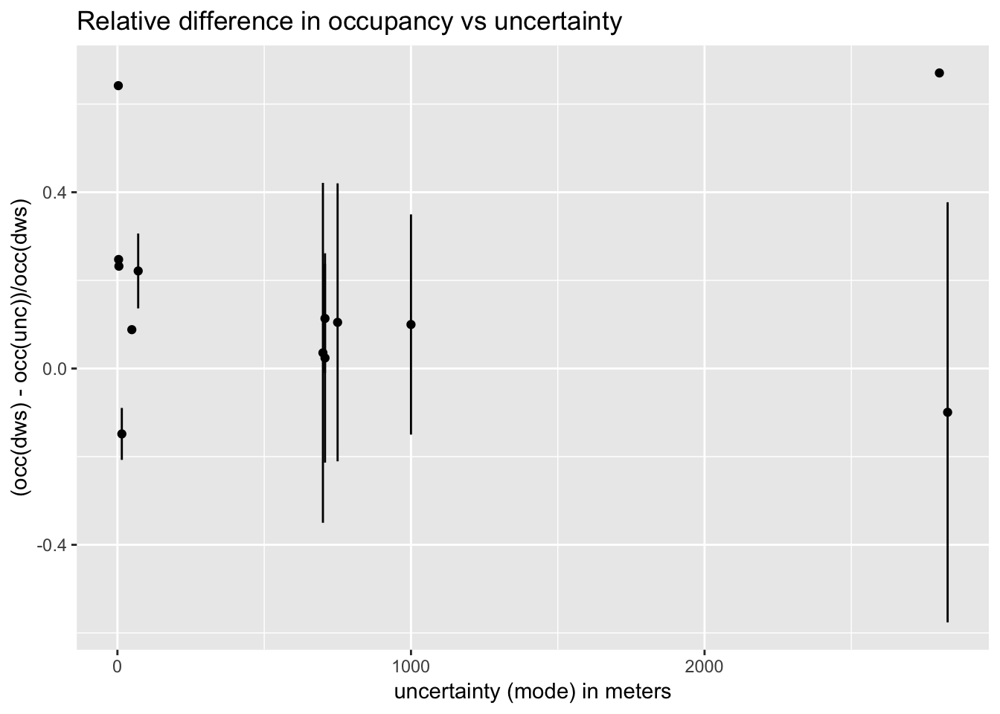